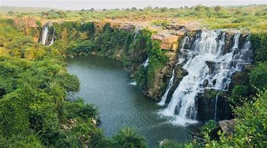
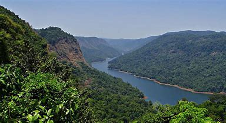

The Nallamalas (also called the Nallamalla Range) are a section of the Eastern Ghats which forms the eastern boundary of Rayalaseema region of the state of Andhra Pradesh and Nagarkurnool district of the state of Telangana, in India. They run in a nearly north-south alignment, parallel to the Coromandel Coast for close to 430 km between the rivers, Krishna and Pennar. Its northern boundaries are marked by the flat Palnadu basin while in the south it merges with the Tirupati hills. An extremely old system, the hills have extensively weathered and eroded over the years. The average elevation today is about 520 m which reaches 1100 m at Bhairani Konda and 1048 m at Gundla Brahmeswara. Both of these peaks are in a north westerly direction from the town of Cumbum. There are also many other peaks above 800m.
Nallamala Hills

| Nallamala Hills | |
|---|---|
|  | |
| Highest Peak | |
| Peak | Bhairani Konda (Sikhareswaram) |
| Elevation | 3,608 ft (1,100 m) |
| Geography | |
| Location | India |
| Borders on | Andhra Pradesh and Telangana |